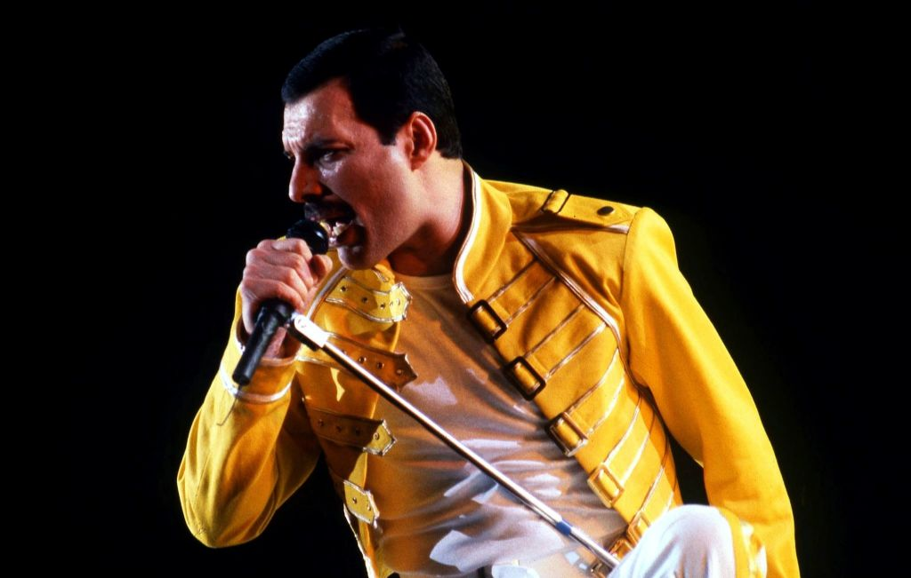

Cantantecompositor
Freddie Mercury
Biografia
Freddie Mercury (nacido como Farrokh Bulsara, 5 de septiembre de 1946-Kensington) fue un cantante y compositor británico, que alcanzó fama mundial por ser el vocalista principal de la banda de rock, Queen. Siendo intérprete, ha sido reconocido por su poderosa voz y extravagantes puestas en escena. Como compositor, escribió muchos de los éxitos de Queen, tales como «Killer Queen», «Bohemian Rhapsody», «Somebody to Love», «We Are the Champions», «Don't Stop Me Now», «Crazy Little Thing Called Love», «It's a Hard Life» o «Innuendo». Además de la actividad con la banda, en los años ochenta lanzó su carrera como solista que lo llevó a publicar dos álbumes: Mr. Bad Guy (1985) y Barcelona (1988), este último en colaboración con la soprano española Montserrat Caballé. El sencillo homónimo, una colaboración entre ambos, fue la canción oficial de los Juegos Olímpicos de Barcelona 1992. Murió de una bronconeumonía, derivada por complicaciones del sida, el 24 de noviembre de 1991, un día después de comunicar oficialmente que padecía esta enfermedad.En 2008, la revista estadounidense Rolling Stone lo colocó en el puesto 18 en su lista de los cien mejores cantantes de todos los tiempos. Mientras que Classic Rock, al año siguiente, lo consideró el mejor cantante de rock de la historia. Por su parte, Allmusic definió a Mercury como «uno de los líderes más carismáticos y dinámicos en la historia del rock».
Informacion Personal
- Nombre de nacimiento: Farrokh Bulsara
- Otros nombres: Freddie Bulsara
- Nacimiento: 5 de septiembre de 1946
- Fallecimiento: 4 de noviembre de 1991 (45 años)
- Nacionalidad: Británica
- Educacion: West Thames College
Informacion Profesional
- Ocupación: Cantantecompositor
- Años activo: 1969-1991
- Género: Rock
- Instrumento : Voz, Piano
- Discográficas: Columbia, EMI, Parlophone y Hollywood Records
- Miembro: Queen, Ibex, Sour Milk Sea